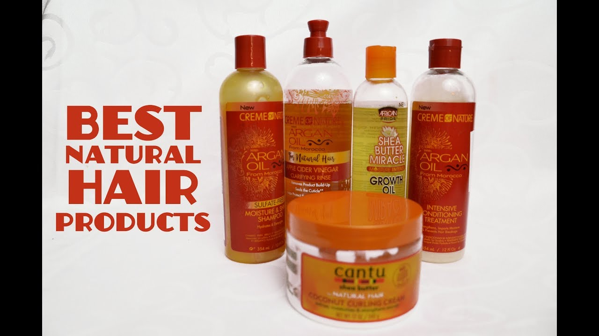

Best Product Reviews of 2020 - Tech, Adventure and Tool Product Reviews
 Search Follow Facebook Instagram Twitter Pinterest Youtube Subscribe Pop Mech Pro Give a Gift Get Our Newsletter Pop Mech Pro Home and DIY Power Tools Cars, Trucks, & Motorcycles Technology Military Gear & Gadget Reviews Science Sci-Fi Airplanes Space Podcasts Promotions Win Do Not Sell My Info Privacy Notice Terms of Use Subscribe Sign In My Account Sign OutBest Product Reviews of 2020
The Best Computer SpeakersExchange that tinny laptop sound for a wider range of rich audio.
By Don Melanson and Paige Szmodis The Best Cordless Nail Guns Sometimes it’s faster, easier, and a lot neater to shoot a nail rath… By Roy Berendsohn The Best Gifts for the Sophisticated Geek Finding a thoughtful gift for a nerdy friend can be tough. These 24 … By Darren Orf and Will Egensteiner The 7 Best Motorcycles to Ride in 2020 Based on more than a decade of riding and professional research, the… By Alexander George The Best Prime Day Deals on ToolsStock up your workshop on a budget.
By Gabrielle Hondorp Oct 14, 2020 These Top-Rated Wireless Headphones Are on Sale for Prime DayAmazon is slashing prices on models from Bose, Beats, Sony, and more during its annual sale.
By Jennifer Sherry Advertisement - Continue Reading Below Oct 13, 2020 Turn Any Stream Into Clean Drinking Water With The LifeStraw for Just $10This ultralight portable water filter is 50% off for Amazon Prime Day.
By Kelsey Mulvey, Paige Szmodis and Adrienne Donica Oct 13, 2020 Our Favorite Levi’s Jeans are 40% off for Amazon Prime DayThere are major deals on denim to be had through Wednesday night.
By Adrienne Donica Oct 12, 2020 The Best Snow Shovels for Clearing Driveways and SidewalksShoveling snow can be a pain. These tools will make it easier.
By Adrienne Donica Oct 8, 2020 The Best Food Vacuum Sealers To Keep Your Meals FreshIf you’re buying and making food in bulk right now, these will help ensure it lasts.
By Gabrielle Hondorp Oct 8, 2020 8 Great Binoculars for Getting a Closer LookKeep a pair on hand, so you can view the world in greater detail.
By James Lynch and Will Palmer Oct 7, 2020 The Best Survival Knives to Get You Through Any Adventure or DisasterFor when the situation calls for more blade than your trusty multitool can provide.
By James Lynch and Adrienne Donica Sep 30, 2020 The Best Multitools for Every SituationInnovative and inventive sidekicks to help you cut, tighten, loosen, open, or twist your way through whatever problems crop up.
By Popular Mechanics Editors Sep 29, 2020 Leave the Wires Behind With These 6 Top Gaming MiceWith customizable buttons, incredible batteries, and ergonomic designs, these are some of the best mice for gaming.
By Gabrielle Hondorp Advertisement - Continue Reading Below Sep 25, 2020 Stay Connected with the Best Satellite CommunicatorsSend texts or call for help with these messengers that work no matter how far off the grid you go.
By Adrienne Donica Sep 25, 2020 The Best Gimbals for Professional-Looking FootageMount your phone or DSLR on one of these and never go back.
By Gabrielle Hondorp Sep 23, 2020 The Best Work Gloves for Cold Winter MonthsWhen you’re doing chores outside, cold hands can be uncomfortable and even dangerous. These gloves and mitts will help.
By Roy Berendsohn Advertisement - Continue Reading Below Sep 21, 2020 These 5 Best Standby Generators Can Help You Weather Any StormWhether you need to power just the necessities or your whole house.
By Gabrielle Hondorp Sep 21, 2020 The Best Waterproof Hiking Boots, TestedStay dry and step confidently.
By Adrienne Donica and James Lynch Sep 17, 2020 The Best Indoor Trainers for Dedicated CyclistsMaintain or build your fitness, even when you can’t go outside.
By Bradley Ford and Bobby Lea Newsletter About Us Media Kit Press Room Contact Us Community Guidelines Advertise Online Customer Service Subscribe Other Hearst Subscriptions Give a Gift Events & Promotions Giveaways Being Green BestProducts A Part of Hearst Digital Media Popular Mechanics participates in various affiliate marketing programs, which means we may get paid commissions on editorially chosen products purchased through our links to retailer sites. ©2020 Hearst Magazine Media, Inc. All Rights Reserved. Privacy Notice Your California Privacy Rights Interest-Based Ads Terms of Use Site Map Do Not Sell My Info Cookies Choices